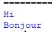

- 1.Introduction
- 2. Variables
- 3.Data types
- 4.Operators
- 5.Conditional_stmts
- 6.I/O_Operations
- 7.Iterative_stmts
- 8.Functions
- 8.1.Arguments
- 9.Sequences
- 10.Modules
- 11.Oops_Introduction
- 11.1.Methods
- 11.2.Inheritance
- 11.3.Polymorphism
- 11.5.Encapsulation
- 12.lambdas
- 13.Exception_Handling
- 14.File_Handling
- 15.Multi_Threading
- 16.Iterators_generators
- 17.Database_Management
Module:
1)A module is a group of statements, variables, functions, methods, classes, etc saved or stored in to a file.
2)The module concept will improve the maintenance and readability of the code.
3)Using module concept we can achieve reusability.
4)A module is a file containing python definitions and statements. Any python program that we develop and save with the extension as .py is by default a module.
5)A module can contain executable statements.
6) When we execute a module all the executable statements in that module will be executed automatically.
7**)To access code from another python file in the current python file we use modules
8)The module you want to import in new python file is parent file.
9)If we want to use some lines of code in another program we use import Keyword.
Syntax:
import name_of_module_you_want_to_import
program1, program2 are two different python files.
Now, when we run program 2, the output will be as follows:
Examples demonstrating Implimentation of modules in different styles
student.py(New python file)(Parent file)
rollno = 45
name = 'abcd'
marks = 67.8
def display():
print(rollno)
print(name)
print(marks)
def msg():
print('msg function from student module')
institute.py(New python file)(parent file)
course = 'python'
name = 'xyz'
numberofstudents = 100
def show():
print(course)
print(name)
print(numberofstudents)
def demo():
print('demo function from institute module')
To access the members or attributes of a module, we need to get that module into the current module or program by using import keyword.
Syntax:
import modulename
import modulename1, modulename2……
Note: We can get multiple modules into the program at the same time.
In a python program we can specify any number of import statements and we can specify the import statements anywhere in the program.
1) Program: to use module
student.py in another python file
sample.py in New python file(child file)
import student
print(student.rollno)
print(student.name)
print(student.marks)
import institute
institute.show()
institute.demo()
2)Program: to use both student and institute modules in a new python file
sample.py(child file)
import student
import institute
print(student.rollno)
print(student.name)
print(student.marks)
student.msg()
institute.show()
institute.demo()
3) Program: to use both student and institute modules by importing at a time in new python file
sample.py(child file)
import student, institute
print(student.rollno)
print(student.name)
print(student.marks)
student.msg()
institute.show()
institute.demo()
In a program if we are using many members of a particular module, then to access every member of that module we need to specify the module name. Instead of specifying the module name multiple times, we can provide an alias name to that module name and access the members of that module by using the alias name.
Syntax:
import modulename as mn
import modulename1 as m1, modulename2 as m2, ……
Note: If we specify an alias name to a module, then the members of that module can be accessed by using alias name only.
4) Program: to implement module by giving alias names(child file)
import student as s
import institute as i
print(s.rollno)
print(s.name)
print(s.marks)
s.msg()
i.show()
i.demo()
5) Program: to implement module by giving alias names in a single line(child file)
import student as s, institute as i
print(s.rollno)
print(s.name)
print(s.marks)
s.msg()
i.show()
i.demo()
If a particular member is used multiple times in a program then every time we access that member we need to specify either the module name or the alias name. If we want to access the members from the module, without specifying the module name or alias name then, we need to take the help of from import.
Syntax:
from modulename import member
from modulename import member1, member2,………..
6) Program: to implement module by importing specific item(variables)(child file)
from student import rollno,name
print(rollno)
print(name)
from student import msg
msg()
7) Program: to implement module by importing specific item(Functions)(child file)
from student import display
from institute import course, name, numberofstudents, demo
display()
print(course)
print(name)
print(numberofstudents)
demo()
When we are accessing the members from a module, we can even specify an alias name to the members.
Syntax:
from modulename import member as m
from modulename import member1 as m1, member2 as m2,………
Note: If we specify an alias name to a member then we must access that member by using the alias name only.
8)Program: to implement module by importing specific item and giving it alias name(child file)
from student import display as d
from institute import course as c, numberofstudents as nos
d()
print(c)
print(nos)
If we want to access all the members from a module then we need to specify the names of all the members separated by comma while importing the module. Instead of specifying all the members separated by comma, we can specify a * symbol.
Syntax:
from modulename import *
9) Program: to implement module by importing all the items(child file)
from student import *
from institute import *
display()
msg()
print(course)
print(numberofstudents)
demo()
10 Program: to implement module in oops(child file)
demo.py
class Parent:
a = 10
def m1(self):
self.b = 20
print('parent class m1 method')
sample.py
from demo import *
class Child(Parent):
c = 30
def m2(self):
self.d = 40
print('child class m2 method')
c = Child()
c.m1()
c.m2()
print(c.a)
print(c.b)
print(c.c)
print(c.d)
Module Search PATH:
When a module is imported, the python interpreter will first search for a built-in module with that name. If not found, the python interpreter then searches for a file named module.py in the current directory or a list of directories given by sys.path
__pycache__ folder:
When we are using a module in another program, the module will be complied and placed in __pycache__ folder.
The __pycache__ folder will be created only when, we use a module in another program. All the modules used in any other program will be compiled and placed in__pycache__ folder for faster accessibility and reusability.
To speed up the process of loading the modules, python language caches the compiled version of each module in the __pycache__ folder under the name module.version.pyc. This naming convention allows compiled modules from different releases and different versions of python to coexist.
When a module is used in another module, the python language checks the modification date of the source and the compiled version to see if it’s out of date and needs to be recompiled or not and this is a completely automatic process of python language.
dir(): dir() will provide the sorted list of all the members available in the current module.
Example:
print(dir()) This statement will display all the members available in the current module.
Syntax:
print(dir(module name))
Example:
print(dir(demo)) This statement will display all the members available in the specified module.
When we use dir( ) function, to display the list of members available in a module, we get some predefined members like.
__annotations__
__builtins__
__doc__
__file__
__loader__
__name__
__package__
__spec__
__name__: The__name__ is a special variable which will contain either the module name or the method name.
When we specify __name__ variable in a module or a program and execute the same module or program, then the value of __name__ is __main__
If we specify __name__ in a module or a program and use that module in another module and if we execute the other module then the value of __name__ will be the name of the module in which __name__ is specified.
Example:
demo.py
print(__name__)
If we execute demo.py module then the output will be __main__
Meaning, the value of __name__ is __main__ within the module,if we import it into other module then it is not __main__, instead the value of __name__ is the name of module that we imported.
Example:
sample.py
import demo
If we execute sample.py then the output will be demo
Meaning, the value of __name__ is not __main__,instead it is the name of module imported in this module i.e demo.
Using __name__ to restrict execution of functions:

Suppose there are 2 programs like this.
In program1 there are 2 functions hi() and hello().
As menctioned in the previous topic:
The value of __name__ in program1 is __main__.
The value of __name__ in program2 is program1, as we have imported program1 into program2.
now in program1, we have statements saying that.
if __name__ == "__main__":
hi()
else:
hello()
When is hi() Executed?
In the above conditional statement, we specified hi() to execute only when __name__ is __main__.
we know that value of __name__ is __main__ in program1.
So, hi() is executed when program1 is executed.
hi() is not executed when program2 is executed as value of __name__ is program1, but not __main__.
when is hello() Executed?
In above statement we specified hello() to execute in else block, meaning when value of __name__ is not __main__.
In program1, the value of __name__ is __main__, so hello() is not executed when program1 is executed.
In program2, the value of __name__ is program1, not __main__, so hello() is executed when program2 is executed.
Output when program1 is executed:

only function hi() is executed.
Output when program2 is executed:
only function hello() is executed.
Program: to demonstrate __name__ attribute
sample.py
def f1():
print('hello guys')
def f2():
print('good morning')
def main():
f1()
f2()
if __name__=="__main__":
main()
In the above program the main() will be called only if we are executing the current program.
Reloading a Module:
When we want to use a module in another module then, we take the help of import statement. Even if we specify the import statements multiple times, the module will be loaded only one time. If we want to reload any particular module then, we take the help of reload() available in either imp module or importlib module.
Syntax:
imp.reload(modulename) (deprecated)
importlib.reload(modulename)
Program: to implement reloading of a module
demo.py
print('good morning from demo module')
Program: to implement reloading of a module using imp module
sample.py
print('this is a sample module')
print('sample line1')
import demo
import demo
print('sample line2')
from imp import reload
reload(demo)
import demo
print('sample line3')
Program: to implement reloading of a module using importlib module
sample.py
print('this is a sample module')
print('sample line1')
import demo
import demo
print('sample line2')
import importlib
importlib.reload(demo)
import demo
print('sample line3')
Default Modules:
Every python program that we develop will by default import 2 modules.
current module (user defined module)
builtins module (predefined module)
All the classes, functions, variables that are available in the both the default modules can be accessed directly in any python program.
Example:
import builtins
print(dir(builtins))
Importing a module: We can import a module into the python program in 2 ways.
By using import keyword(static loading)
By using import_module()(dynamic loading)
If we know the name of the module during the development time, then use import keyword but if we know the name of the module during the run time, then use import_module().
Program: to implement dynamic loading of a module
import importlib
modname = input('Enter the module name : ')
importlib.import_module(modname)
Package:
A package is a collection of related modules.
The package concept will improve the maintenance of the application.
The package is nothing but a folder or a directory.
We can specify any number of modules in a package
A package can contain any number of sub packages.
The name of a package can be any valid python identifier.
The industry recommends to specify the name of the package as the reverse of the domain name.
Domain name -------> www.google.com
Package name -------> com.google
Program: to implement a module in a package
d:\python_practice\sample.py
class Parent:
def msg(self):
print('good morning')
d:\python_practice\demo.py
import python_practice.sample
p = python_practice.sample.Parent()
p.msg()
math module:
The math module provides some mathematical functions which perform trigonometric functions, representation functions, logarithmic functions, angle conversion functions, etc
Program: to perform mathematical calculations using math module
from math import *
print(pow(2,5)) 32.0
print(sqrt(16)) 4.0
print(abs(-8)) 8
print(floor(4.7)) 4
print(ceil(4.7)) 5
print(radians(30)) 0.5235987755982988
print(degrees(30)) 1718.8733853924696
print(sin(0.5)) 0.479425538604203
print(cos(0.5)) 0.8775825618903728
print(tan(0.5)) 0.5463024898437905
print(log(10)) 2.302585092994046
print(factorial(5)) 120
print(pi) 3.141592653589793
random module:
This module can be used to generate a number which is of either int type or float type or a select a value from a sequence.
random(): This function generates a random float number between 0.0 to 1.0. The function doesn't need any arguments.
uniform(): This function generates a floating point number within a given range.
randint(): This function returns a random integer between the specified integers.
randrange(): This function returns a randomly selected element from the range created by the start, stop and step arguments. The value of start is 0 by default. Similarly, the value of step is 1 by default.
choice(): This function returns a randomly selected element from list, tuple or string which can be indexed or a non-empty sequence. If we specify an empty sequence as argument, then it raises an IndexError.
shuffle(): This functions randomly reorders the elements in a list.
Program: to perform random operations by using the functions of random module
from random import *
print(random()) 0.1902417674352388
print(uniform(30,60)) 58.21928181005983
print(randint(11,20)) 16
print(randrange(41,70,2)) 55
nos = [2,3,4,7,11,13,17,19,23]
print(choice(nos)) 19
data = 'aeiou'
print(choice(data)) u
Program: to generate random numbers like OTP or Captcha code
from random import *
print(randint(1,9), randint (1,9), randint(1,9), randint(1,9), sep=' ') 8 7 3 9
print(randint(1,9), randint(1,9), randint(1,9), randint(1,9), sep=' ') 4 1 2 5
print(randint(1,9), chr(randint(65,90)), randint(1,9), chr(randint(97,122))) 3 N 6 p